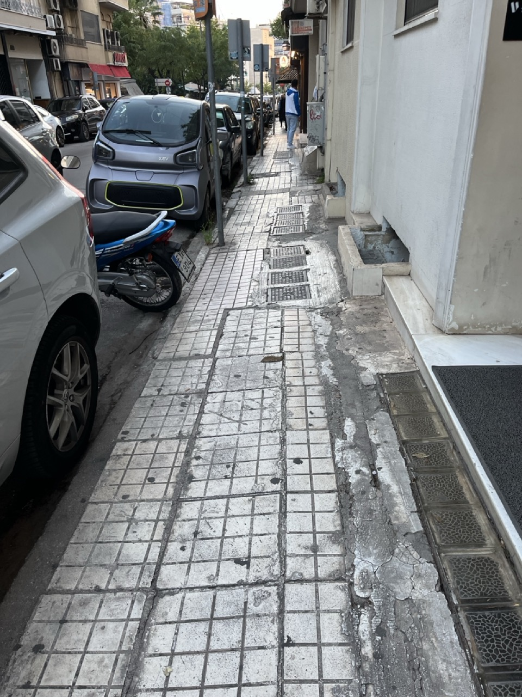
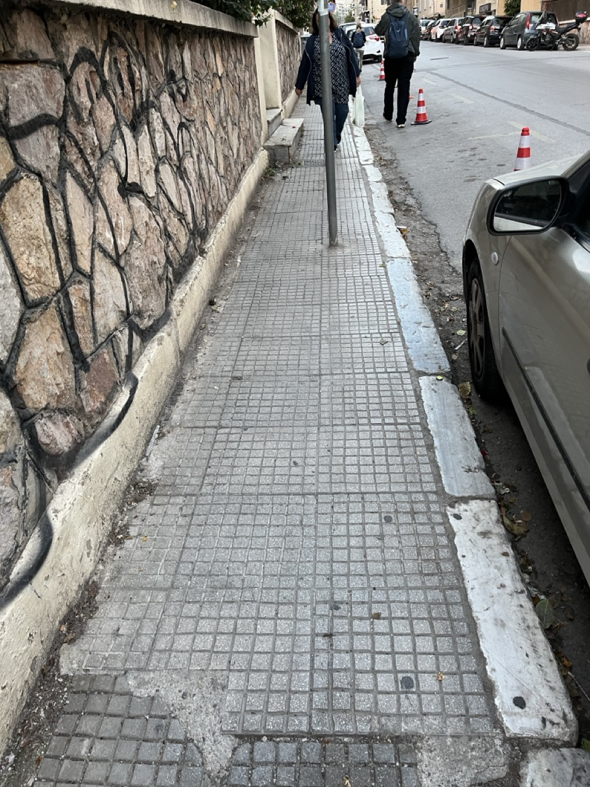
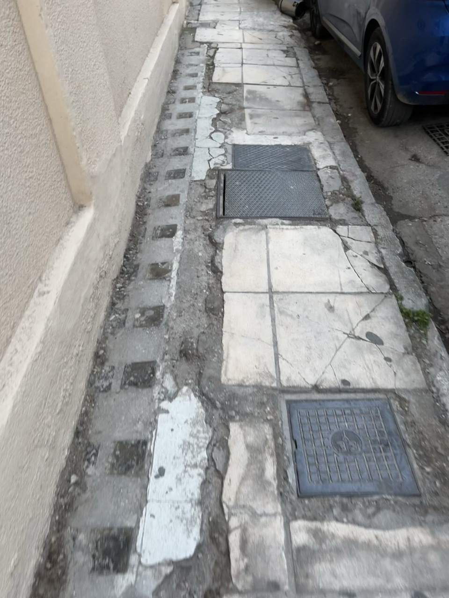
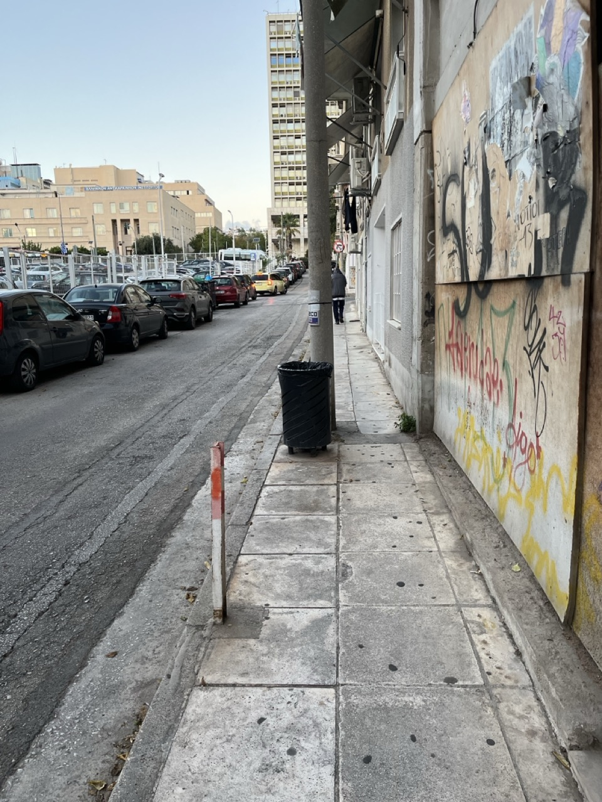
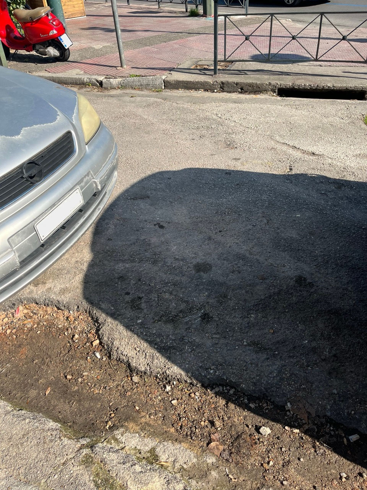
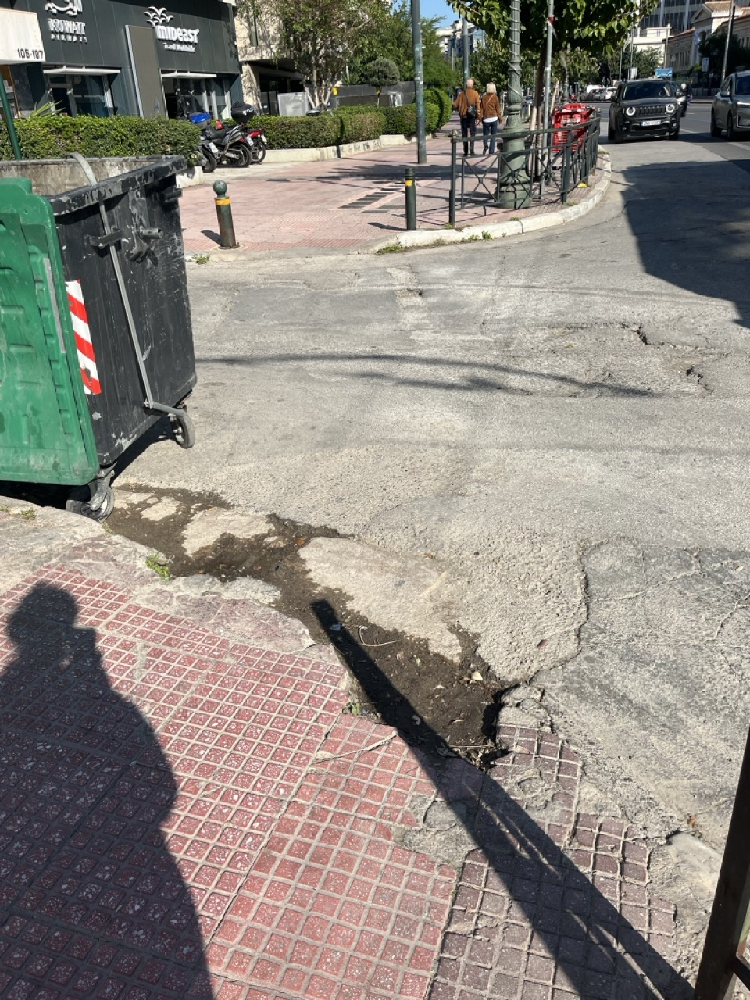

Athens, November 2025
Vicky Dimitropoulou, 36
Moving around Athens: an act of resistance

In November 2025, I began work on my in-progress project, Memories of Resistance, a walking performance in the city of Athens.
The work deals with the resistance of war disabled people to the Nazi occupation and their collaborators during World War II and brings it to the present day by linking it to the genocide of the Palestinians.
To prepare for the performance, I had to walk, or rather, explore the route I would follow in the city.

I have lived in Athens for many years and am familiar with its challenging sidewalks, but embarking on the process of walking around the city without rushing and attempting to find the most accessible route (for all the different bodies that would be with me during the performance) to reach my destination, it was a completely different process from the everyday experience of getting around the city.
I quickly realised that I couldn't trust the map and the directions it gave me. Although I decided to take an alternative route, I came across:
chairs and tables from different cafés on the sidewalk;
broken tiles on the sidewalk;
signposts in the middle of the sidewalk;
trash cans and poles in the middle of the sidewalk;
no accessible ramp to cross from one sidewalk to the other;
sidewalks so narrow that a wheelchair couldn't fit.

For a route that normally (?) should have taken 21 minutes, it took me almost an hour. So, where the performance concerned a specific theme, historical memory and its preservation, I realised that it also deals with a present-day issue: how we, as disabled people, move and exist in public spaces, especially in a city like Athens, where accessibility is conspicuous by its absence.

A few days before I did the performance, they asked me why I wanted to do it in the public space and get into this challenging process of getting around Athens. I told them that the fact that a group of visibly disabled people (blind, in a wheelchair, deaf, etc.) is out and about in Athens is an act of resistance against the prevailing ableism and the lack of accessibility policies.

We reclaim the visibility of our bodies in the public space, even if it seems that there is no room for us there.